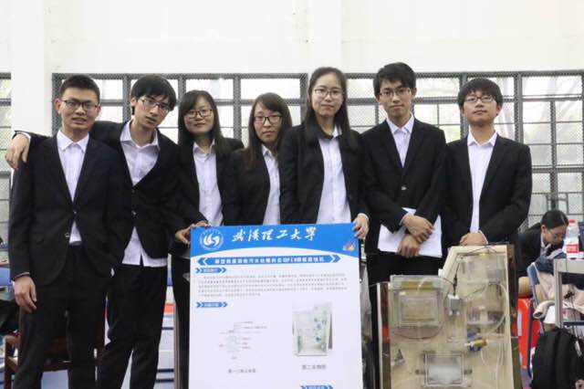

最近因为ID3的实现弄的很烦躁，所以毅然同意了写一篇关于节能比赛的心历路程（貌似更像一篇回忆录），同时温习一下hexo博客，真的是几个月不碰，就忘的一干二净。
是啊，我的记性本来就比较差，更不要说距离节能减排结束那么长时间了～感觉已经长到我不记得比赛是几几年开始了，也不记得是什么时候结束的了。
只记得大三的时候特别想做比赛，希望有人可以带带我，从而从比赛中让自己不仅仅只会考试。我也是个十分幸运的人，碰到了董慧鑫这个竞赛大佬，于是和李亮，董慧鑫组成了三人小组。那时候，抽空晚上会出来讨论讨论可以做什么。但是人总是会逐渐让惰性占据主导地位，为了督促自己，我们最终报了比赛。
在这个比赛里，我最多的是希望自己可以从比赛中得到能力的锻炼，其他也就是次要的了。回顾那段时间，感觉自己几乎没怎么为这个团队贡献什么，所以技能上感觉也没有提高什么，但是我还是很享受整个过程。很可能那段时间我的人生有点开挂了，遇上了一个会硬件的罗豪，一个会软件的彭岩，一个学霸型的李纳瑞，一个勤奋的陆婧，一个打杂跑腿外加啥都干的李亮和一个carry全场的董慧鑫。
起初的时候，每天都到西院实验室测数据，但是数据总是很不理想，那时候我觉得，我们的想要的效果大概是实现不了了吧～但是可能只有做了才知道自己行不行，在罗豪和李亮不断的改善硬件，我们慢慢看见了一些曙光。我一直不懂，为什么罗豪可以看懂那么复杂的电路，那么长的英文文章。同时，给我映像最深刻的就是那股盐酸味和李纳瑞在实验室的身影。在我眼里，纳瑞就是为了科研而生的，她严谨，细致，对待实验结果认真负责。
后来到了整体结构的时候，我对董慧鑫的大脑回路也是挺佩服的，如果说化学反应模块是我们第一大难题，可能结构这在我眼里就是第二大难题了～陆婧每天学着相关软件，在董慧鑫的指导下，不断改进。有时候我总觉得董慧鑫对自己的要求过于严格，可事实证明，如果没有他的坚持，我们可能已经死在了半路。嗯，不能少了四处奔波的李亮。
后来的软件控制，我真的是丝毫没有接触了，只记得彭岩在实验室里不拘小节，捧着电脑，随地而坐。
对了，我还记得那天，我们答辩时，被老师diss的场景，顺便也记住了答辩后的那顿饭。
其实整个过程回想起来，真的可能没有过多很难理解的地方，但是我们就是成功了呀。可能主要原因就是我们在董慧鑫的鞭笞下走完了整个赛程。我很开心，整个过程中，我们一直都是一个团队，虽然中间也会有些小摩擦，小矛盾，但最终都会烟消云散，而不是沉淀在了哪个阴暗的的小角落。所以，这也是我们能坚持下来的一个更重的原因。
有时候一个团队的力量可能超乎你的想象，当你觉得你在做毫无意义的事时，你的同伴正在努力，他们还没有放弃。当你重新鼓足勇气出发时，你的队友可能丢失了方向，于是你就会递给他一根拐杖，慢慢向前走。现在大家都已经身处不同的环境，但是希望每个人都依旧可以有一个在累的时候，愿意拉你一把的同伴。
最最最不能忘记的，还有阳老师了。可能整个比赛里，可能找不到第二个和阳老师一样的指导老师。我喜欢老师的和蔼可亲，也喜欢老师的热爱生活，同时也喜欢老师对待科研的态度。有时候我会想，如果科研都是像我们一样的操作，那估计是有点可怕的。最近又喜欢上了一个老师，幽默风趣，自信满满。老师在课上说的两句话我印象挺深的—–这个世界还能指望你们吗？我该退休了，不然你们就该失业了。身边不缺乏能力佼佼者，嗯～可能我还没就业就要失业了呢。有时候就在想，我是该安安稳稳找个一般般的工作，为了以后安定的生活。可是，我又希望自己，可以有点不一样的地方，但是却发现自己脑子不是很够转。没有进实验室的我还是一边抱着一丝幻想一边又开始希望寻求安稳～嗯，可能到了所里天平就会自动倾向一边了吧～
但至少希望你们戎马归来，仍是少年～
嗯，留个视频纪念一下ba~